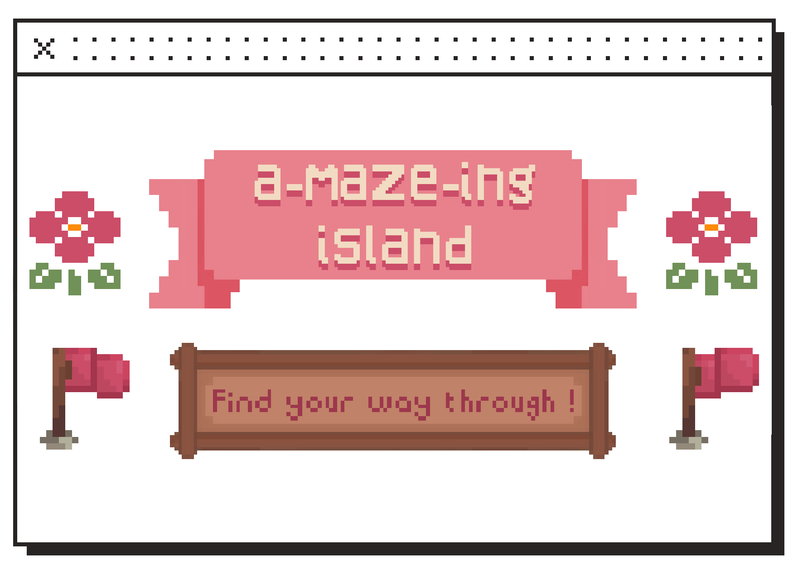
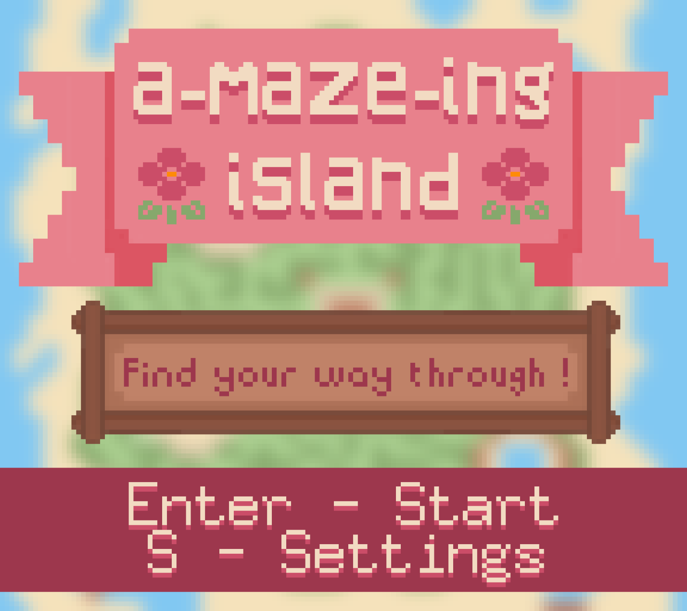
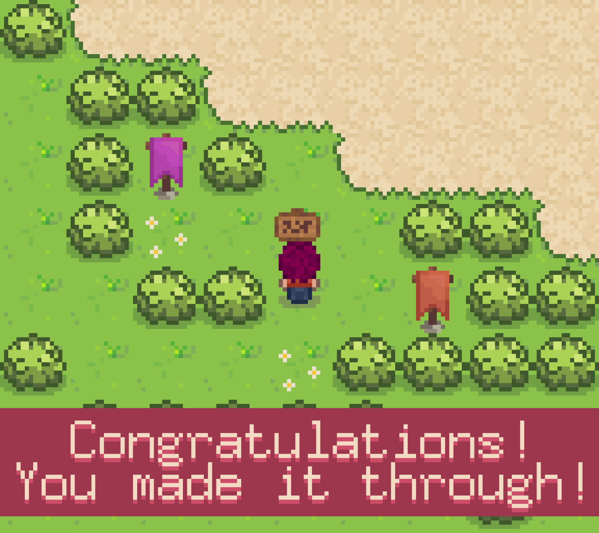
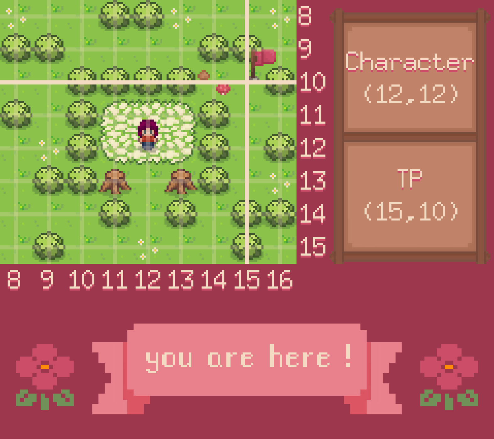

Extensions réalisées :
- Génération aléatoire de terrain
- Enregistrement d’un terrain
- Animation des décors
- Téléporteurs
- Interdiction de marcher sur des tuiles
- Caméra bloquée aux bords du terrain
- Caméra plus précise
- Affichage du terrain amélioré
- Particules
1. Amazing Island

The Amazing Island ou A-maze-Ing Island est un projet scolaire réalisé dans le cadre des matières « Introduction au développement » et « Implémentation d'un besoin client ».
Ce projet a pour objectif de matérialiser les déplacements d’un personnage sur un terrain et d’implémenter un certain nombre d’extensions en vue de créer un jeu.
The Amazing Island est un puzzle game paisible dans lequel on incarne un personnage sans nom, cherchant à sortir de nombreux labyrinthes.
Au cours de son aventure, il pourra découvrir divers décors et profiter de douces animations.
Développement
Golang
Quadtree
Game design
Labyrinthe




Le terrain est stocké en mémoire à l’aide d’un quadtree pour laquelle nous avons développé une bibliothèque.
Nous l’avons utilisé pour sa capacité à stocker la structure d’une très grande image de manière compacte.